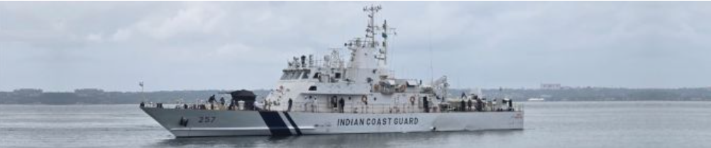

Quick defence technology cards and summaries will appear here.
DT#9
Home Minister Amit Shah announced a new territorial security framework featuring a four-part security grid, advanced surveillance technologies, and public participation, aiming to strengthen border protection, close security gaps, and secure vulnerable regions within two years.(May30,2026)

DT#8
Goa Shipyard Limited has delivered ICGS Akshay, the fifth indigenous Fast Patrol Vessel for the Indian Coast Guard. Featuring over 65% local content, it strengthens maritime security, coastal surveillance, search-and-rescue capabilities, and India’s self-reliance in defense manufacturing. (May30,2026)
DT#7
Embraer is pitching the KC-390 for India’s MTA program, highlighting 30% lower operating costs than the C-130J, higher payload, and faster missions, while offering local manufacturing, MRO facilities, technology partnerships, and integration with India's defense industry.
(May30,2026)

DT#6
India's ₹70,000 crore Project-75I submarine programme has received approval from the Finance Ministry. The final clearance now awaits the PM-led Cabinet Committee on Security (CCS).
The first submarine, based on the HDW Class 214 design, is expected to be delivered around seven years after the contract is signed.(May29,2026)

DT#5
US firm Honeywell has delivered the first batch of three TPE331-12B turboprop engines for the overdue indigenous HTT-40 basic trainer aircraft to HAL.(May28,2026)

DT#4
The Defence Ministry today issued the Request for Proposal for the mega indigenous fifth-generation Advanced Medium Combat Aircraft (AMCA) project to the three shortlisted bidders, including Larsen and Toubro-Bharat Electronics Limited, Tata Advanced Systems and Bharat Forge-BEML(May27,2026)

DT#3
China secures full technological independence in single-crystal superalloys. China has joined an elite group of nations with complete control over the technology chain for the most critical component in aero-engines, reports China Media Group.(May26,2026)

DT#2
Defence Minister Rajnath Singh flagged off the Suryastra Universal Rocket Launcher System in Shirdi, Maharashtra.(May23,2026)

DT#1
India has inducted the RayStrike-9 directed energy weapon project into its defence sector, which is spearheaded by Paras Defence in collaboration with DRDO’s CHESS laboratory. The development has marked a significant leap in anti-drone and anti-missile technology.(May22,2026)